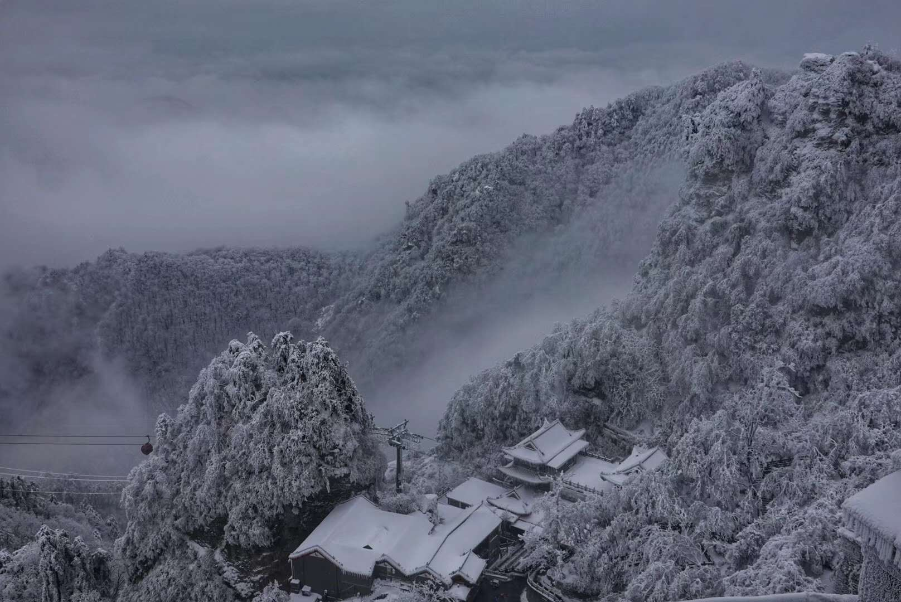
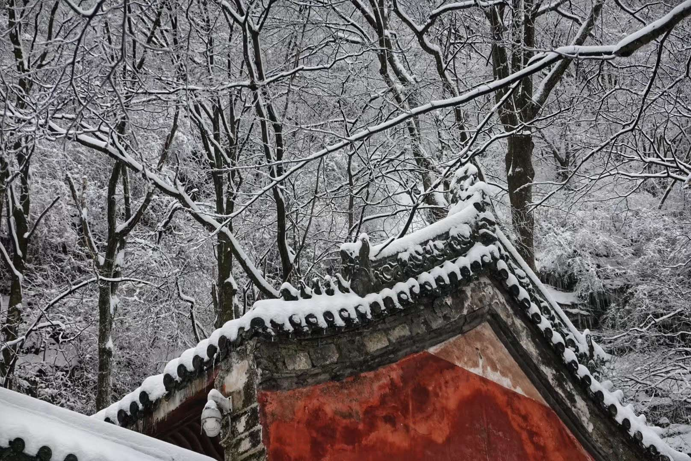
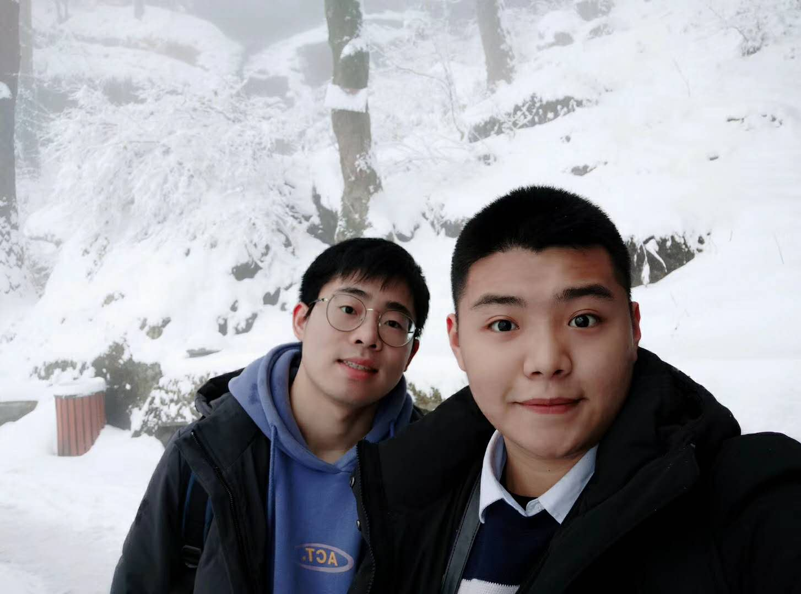

在大雪纷飞中问道武当
用相机记录下每一片雪花飘落的样子
在皑皑白雪中登上紫霄殿，静静地看道长练功
穿过红墙绿瓦，感受这里每一寸古老的气息
不愧是亘古无双胜境，天下第一仙山
走累了，就在山里沿着雪径，朝着炊烟的方向一直走，
找个客栈坐下来，和老板烤烤火，聊聊天，
再吃一碗老板亲手做的面，尝尝自制的辣椒酱，喝一杯山泉水泡的茶
老板说每个季节都会有人从广东跑过来在这住个十几天，自己打山泉水自己烧火泡茶做饭。
有时平平淡淡，返璞归真，也是一种很惬意的生活。
雪中武当，仙气缭绕
晚上住在七星树尾端同福客栈，老板很好，酒店环境也很不错，可以直接在这里就餐
第二天早琛花费三小时，从客栈出发，登顶武当之巅。
登顶路上，海拔很高，有云生足底之感。一路上基本看不见登山的游客，但是有时能听到人说话的声音。
在路上，目之所及皆是雪白冰封，古桧雪松交错，偶尔能循着叫声看到三两成群的乌鸦。
走累了就裹一裹衣服坐在雪地上，吃两口巧克力味奥利奥，感觉好极了。
登顶之路是仿佛无尽的阶梯，只好默默数着步数，五十步一小歇。
终于能隐约看到藏在雪雾中的金殿。真不愧是五里一庵十里宫，丹墙翠瓦望玲珑。楼台隐映金银气，林岫回环画镜中。
在金顶之下，焚香请愿，然后再登上已是全面冰封的武当之巅。
过了一会，金顶被浓雾所笼罩，乘坐索道下行，仿佛穿梭于未知当中，结束了奇特的武当山之旅。
人能常清静，天地悉皆归! 在文末放上我拍摄的美景！ 有兴趣的朋友可以看看我在马蜂窝写的游记


